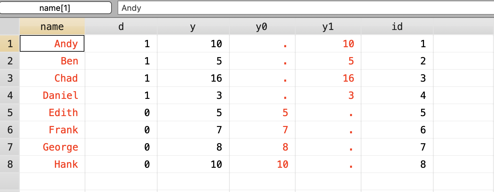
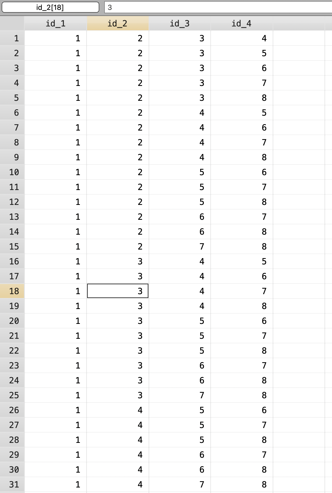
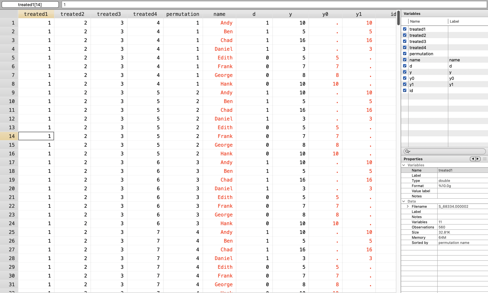
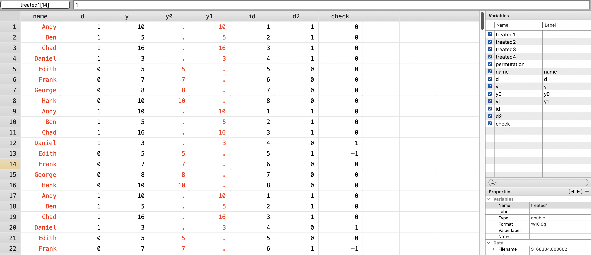
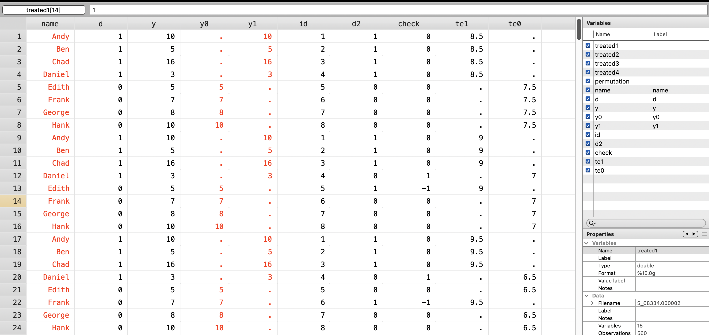

Chapter 3 Randomized Inference
Adapted from Cunningham (2021)
We will use a placebo-based test to calculate exact p-values. We need every single permutation of treatment to calculate the exact p-values from the ATE.
3.1 Set up the Dataset
First we will set the seed so we can replicate our randomized results
Next we will bring in our
cd "/Users/Sam/Desktop/Econ 672/Data"
use ri.dta, clear
tempfile ri
gen id = _n
save "`ri'", replace
Next we will create all combinations from our eight observations. We will need to install the percom package into stata.Out of 8 observations, we get 70 permutations. We can use the combin command to get these permutations. From the help combin, the combin command generates \(k\) unique combinations from a set of \(n\) objects, where \(k\) is not greater than \(5 (2 =< k <= 5)\). Program first arranges \(k\) possible permutations and then retains unique combinations. It supports both string and numeric variables.
combination: \(\frac{n!}{k!(n-k)!}\)
We will tell the combin command that we want 4 combinations from our 8 observations.
k = 4
N = 8
Combinations Formed: 70
Next we will label the permutations 1 to 70.gen permutation = _n
tempfile combo
save "`combo'", replace
forvalue i =1/4 {
rename id_`i' treated`i'
}Next we will merge our permutations with our dataset of potential outcomes

3.2 Randomize Assignment to Treatment
Next we will randomized treatment and calculate other test statistics.
First, we create a fake treatment variable \(d2\)
gen d2 = .
replace d2 = 1 if id == treated1 | id == treated2 | id == treated3 | id == treated4
replace d2 = 0 if ~(id == treated1 | id == treated2 | id == treated3 | id == treated4)
gen check = d - d2
Next, we will calculate true effect using absolute value of simple difference in outcomes \((SDO)\).
